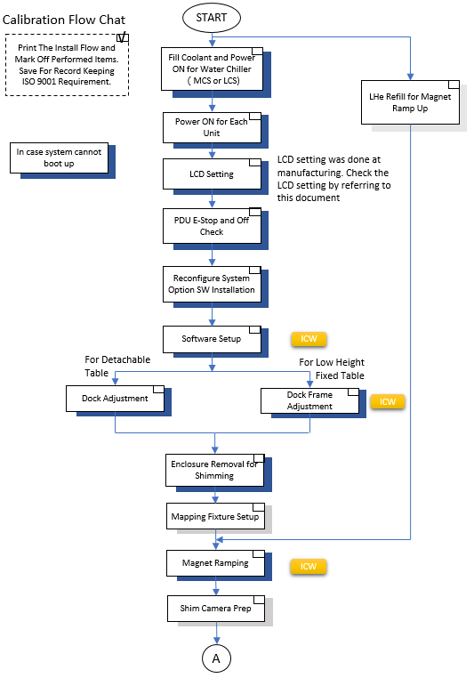
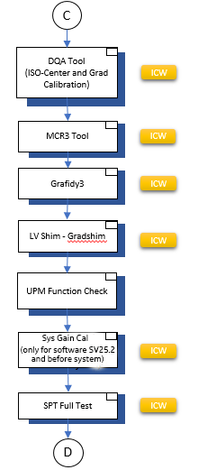
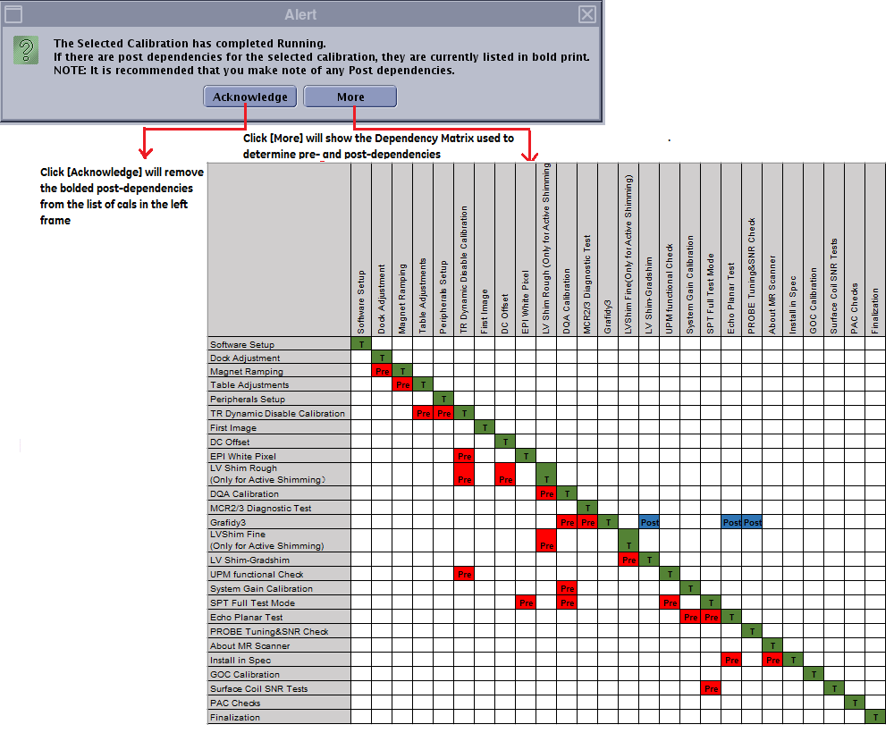

Install and Calibration Wizard for RD Series Magnet
Prerequisites
Overview
The Install and Calibration Wizard is designed to guide the user to follow the proper sequence of installation workflow.
1 Starting Install Calibration Wizard
Procedure
- Insert the Service Key(SSA Key).
- Launch the Service Browser (Common Service Desktop).
- Click on the Calibration Tab:
- If you are in Install Mode, click on [Install and Calibration
Wizard] ⇒ [Click here to start this tool].
Figure 1. Launch Install and Calibration Wizard

- If you are in Maintenance Mode, click on [Calibration Wizard] ⇒ [Click here to start this tool].
- If you are in Install Mode, click on [Install and Calibration
Wizard] ⇒ [Click here to start this tool].
- The wizard will launch the mode that corresponds to the system status, either Install Mode or Maintenance Mode (see sections below for detail)
2 Starting Install Calibration Wizard
Procedure
- Insert the Service Key(SSA Key).
- Launch the Service Browser (Common Service Desktop).
- Click on the Calibration Tab:
- If you are in Install Mode, click on [Install and Calibration
Wizard] ⇒ [Click here to start this tool].
Figure 2. Launch Install and Calibration Wizard
- If you are in Maintenance Mode, click on [Calibration Wizard] ⇒ [Click here to start this tool].
- If you are in Install Mode, click on [Install and Calibration
Wizard] ⇒ [Click here to start this tool].
- The wizard will launch the mode that corresponds to the system status, either Install Mode or Maintenance Mode (see sections below for detail)
3 Special Considerations
Procedure
- Re-launching machine data calibrations.
If the user tries to launch a calibration in the ICW after it has already passed, the system will warn the user that the selected calibration may be dependant other calibrations. The user may want to re-run the calibrations listed prior to re-running selected calibration. While this is not enforced by the interface, it is highly recommended that the user make note of these pre-dependencies and run them before completing the selected calibration. See Figure 3.
Figure 3. Pop-Up Message When User Tries To Re-Run A Calibration That Has Already Passed

- Tool Failures.
1. If a task is incomplete or a calibration fails, the interface will turn the name of that task/calibration red. Post-dependencies will not become available until the task/calibration has passed. See Figure 4.
Figure 4. Tool Failure

4 Calibrations Guided Flow
Procedure
- Perform Calibration according to the following Flowchart.note:
ICW is abbreviation of Install and Calibration Wizard.
When the Icon “
 ” is shown at the right of flow box, perform the procedure
from Install and Calibration Wizard.
” is shown at the right of flow box, perform the procedure
from Install and Calibration Wizard. Figure 5. 3rd day

Figure 6. 4th day
 note:
note:Passive Shimming refer to 16545203.pdf, only apply on software (GE PN 5102783) version 16 and above.
Figure 7. 5th day

Figure 8. 6th day

Figure 9. 7th day

5 MAINTENANCE MODE
Procedure
- After all steps have been successfully completed in the “Install” mode, the next time the Install Calibration Wizard is launched it will be in “Maintenance Mode”.
- In Maintenance mode there is no calibration order enforced,
however if a selected calibration is affected by or affects any other
calibration, then a pop-up message is displayed and affected calibrations
are Bold. SeeFigure 10 .The Dependency
Matrix for Maintenance Mode
is shown in Figure 4
Figure 10. Starting Maintenance Mode


- After the user acknowledges the Pre- and Post- Dependencies by clicking [Yes], all pre-dependencies are un-bolded and the selected tool becomes active.
- Perform all necessary set-up prior to launching the tool. See Figure 11for instruction
on how to start calibrations in Maintenance Mode.
Figure 11. Running Calibrations In Maintenance Mode

- When you click [Check Status], one final pop-up message will
alert you to the post-dependencies. Clicking [Acknowledge] will cause
the post-dependencies to be de-bolded. Clicking [More] will show
the “Dependency” matrix used to determine the pre and
post dependencies. See Figure 12
Figure 12. After [Check Status] Has Been Clicked

note:To read the dependency matrix for Maintenance Mode: The same tasks are listed vertically and horizontally. In the vertical column, find the calibration that you wish to run. Follow that line horizontally until you reach the yellow square. Any task vertically directly above the yellow square is a pre-dependency, and any task vertically directly below the yellow square is a post-dependency.
For troubleshooting purposes, if user is about to perform a certain calibration (or task), it would be beneficial to see what pre-dependencies are related to that calibration and consider performing them. If pre-dependencies are not run, the system will not be negatively affected. Post-dependencies, however, are very important. For example, if Grafidy is run, the LV Supercon, Gradcal EPT and Probe values may have changed. Each one of these calibrations should be run after the completion of Gradify because they are Post-Dependencies of that cal.
- It is highly recommended that any calibration highlighted as a post-dependency also be run immediately after the selected calibration.
- After the Install Calibration Wizard is launched in Maintenance
Mode, it will help you keep track of what calibrations have been run
during the current session by changing the font color of the calibration
name to blue. As long as the ICW remains open, it will track all
calibrations for which Check Status has been
clicked. note:
The ICW will only track those calibrations run while that instance of ICW is running. If the ICW is closed and re-opened, the font color for all calibration names returns to black.
6 Finalization
Procedure
- To exit from the Install Calibration Wizard, click on [File]
-> [Quit]. A pop-up box will appear as in Figure 13.
Figure 13. Exiting The Install Calibration Wizard

- Choose Yes to exit from the ICW and perform a Save Info
- Choose No to remain in the ICW.
- Choose Exit] to exit from the ICW without performing a Save Info.